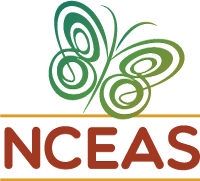

 In the past two decades, researchers at NCEAS have produced over 2200 peer-reviewed publications as part of nearly 500 projects. These products include groundbreaking innovations in synthesis science and encompass a broad range of topics, from the ecological effects of climate change to foundational concepts in evolution and community ecology. Over time, the scope of research at NCEAS has continued to expand to encompass conservation and resource management challenges and critical issues at the nexus of nature conservation and human well-being. Given the volume and range of NCEAS research over the past 20 years, NCEAS has sought to create new tools to help understand and communicate both the scope and impact of our collective work. Through this process, sixteen themes have emerged that best describe NCEAS papers and projects.
The sixteen themes of NCEAS' research are represented as arcs on the outer circle. The colored circles and squares represent NCEAS projects and products and their relationships to the research themes.
Beginning in 2012, NCEAS Postdoctoral Associate (now Research Associate) Stacy Rebich Hespanha used Latent Dirichlet Allocation (LDA) topic modeling to identify these sixteen emergent subject areas that describe the main themes addressed in the titles, abstracts, and keywords of NCEAS papers and projects, as well as 87 finer-scale topics that define the clusters in this visualization. Latent Dirichlet Allocation, a probabilistic approach to discovering topics based on co-occurrence of terms, was first described in Blei, Ng & Jordan, 2003. A more general overview of topic modeling approaches by David Blei (2012) provides a good introduction. The location of the points was determined through the Hellinger distance and t-distributed stochastic neighbor embedding (t-SNE), which pulls each point together with its nearest neighbors in 2D space, but doesn't necessarily push dissimilar documents apart. t-SNE was described by van der Maarten and Hinton (2008).
Based on these data, Stacy and NCEAS software designer Lauren Walker sketched out a design for a web-based interactive visualization tool for browsing and exploring the entire body of work at NCEAS. During the first Open Science Codefest in 2014, informatics experts contributed to the development of this visualization. Lauren has since continued development of the project, resulting in this interactive publication browser.
The open source code for this visualization is on GitHub and is free to use. Thanks to Stacy Rebich Hespanha, Lauren Walker, LeeAnne French, Stephanie Hampton, Debbie Donahue, Morgan Visalli, Leah Fine, David Harris, John MacCuish, and Parker Abercrombie for their contributions to the development of this visualization. The topic modeling and visualization was conducted using the Text Visualization Toolbox, the D3 JavaScript Library, the tsne R package, and Shiny.
The NCEAS projects and products most closely related to Informatics, Modeling & Analytics describe innovative models and data analysis methods for ecological synthesis.
Representative terms models, data, methods, uncertainty, analysis
These papers and projects address critical questions about how to protect biodiversity and manage scarce resources in the face of uncertainty.
Representative terms conservation, biodiversity, species, threats
NCEAS research has developed quantitative approaches and tools to evaluate the benefits people obtain from ecosystems.
Representative terms ecosystem services, restoration, land, management
These papers and projects focus on interdisciplinary marine ecosystem science, and many of them have informed effective policy and management.
Representative terms fisheries, marine reserves, ocean, management
Papers and projects most closely related to Community Ecology focus on community-scale determinants of species richness, diversity, and coexistence.
Representative terms species, communities, diversity, productivity, species richness
Over 100 NCEAS projects have focused on climate change feedbacks and the effects of climate change on organisms and ecosystems.
Representative terms climate change, temperature, vegetation, responses, precipitation
NCEAS papers and projects on Landscape Ecology examine how species move through habitat patches and corridors.
Representative terms dispersal, habitat, populations, landscape, patches
These papers and projects have contributed foundation science analyzing survival, mortality, and how populations change over time.
Representative terms populations, individuals, dynamics, mortality, survival
Biogeography studies global patterns of species distribution, abundance, and biodiversity and their causes.
Representative terms patterns, species, range, distribution
These papers and projects examine how carbon, nitrogen, and other nutrients move through ecosystems.
Representative terms global, npp, soil, decomposition
NCEAS research in this area has improved our understanding of interactions between predators, prey, and competitors.
Representative terms prey, predators, food webs, coexistence
NCEAS researchers have developed new approaches to reconstructing the history of biodiversity on Earth.
Representative terms diversity, extinction, taxa, time, fossil record
Papers and projects related to Evolution address foundational concepts in selection, speciation, adaptation, and phylogenetics.
Representative terms evolution, selection, traits, species
These papers and projects study how tropical and temperate forests grow and change.
Representative terms forest, plants, growth
Research in this area examines ecosystem responses to fire, invasions, and other disturbances.
Representative terms invasion, disturbance, establishment, success
These papers and projects have contributed new knowledge about the drivers of the spread of disease in human and wild populations.
Representative terms disease, parasites, host, pathogens, transmission